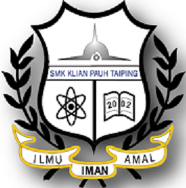
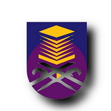

| My Primary School | My Secondary School | My University |
|---|---|---|
| SEKOLAH KEBANGSAAN TAMAN JANA. I started studying from 2007 to 2012. I got an unsatisfactory result in UPSR which is only 1A from five subjects and have received the best personality award 2 times. My experience as a primary school student did not make me very happy and I am not an active person involved in extracurricular activities as well as avoiding sports activities. SEKOLAH AGAMA RAKYAT AL-KAUTHAR. This is my extra school in the afternoon starting from 2pm to 6pm. I started studying from 2008 to 2011. I took the UPKK test and got 6A from eight subjects. |
SEKOLAH MENENGAH KEBANGSAAN KLIAN PAUH. I continued my schooling from 2013 to 2017. Obtained 3A from eight subjects in SPM results. 3A I get is the subject of Bahasa Melayu, Pendidikan Islam, and Science. |
UNIVERSITI TEKNOLOGI MARA KEDAH. After finishing school,I start continued my studies on 2018. I was offered an Information Management Course and now I am a final semester student who will graduate in 2021. At the beginning of semester 1, I got bad results due to my carelessness. Because of that, I started improving my learning skills and maintaining my results consistently until the end of semester. |